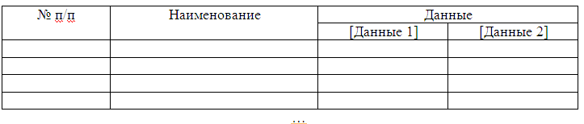

ЛАБОРАТОРНАЯ РАБОТА № WRD-03
РАБОТА С ТАБЛИЦАМИ В MS WORD. ЧАСТЬ 1
Задания:
- Загрузите документ В-1, В-2, В-3,
В-4, В-5,
В-6, В-7, В-8,
В-9,
В-10, В-11, В-12,
В-13, В-14, В-15, . Сохраните его копию в своей
сетевой папке. Имя копии — Word-03.
- Для Таблицы 1:
- Добавьте слева от первого столбца еще один
столбец (Вкладка Макет->Вставить слева). Разместите в нем номера строк как нумерованный список. Строку заголовка не нумеровать.
- Настройте ширину столбцов. Выровняйте ширины
столбцов с числовыми данными. (Макет->Автоподбор->Автоподбор по ширине окна; Макет->Выровнять ширину столбцов )
- Выровняйте наименования во втором столбце по левой стороне
ячейки.
- Продублируйте заголовки
столбцов на последующие страницы. (Вкладка Макет->Повторить строки заголовков)
- Отсортируйте таблицу по второму столбцу в алфавитном порядке
наименований.
- Настройте границы таблицы. Обрамление всей
таблицы, нижнюю границу заголовка столбцов,
правые границы первого и второго столбца
выполнить двойной линией; остальные границы -
одинарной линией.
- Создайте копию таблицы 1: выделите, скопируйте и вставьте под Таблицей 1, отступив несколько строк, озаглавьте "Таблица 1 Копия".
Для того, чтобы нумерация в копии начиналась с 1, щелкните по первому по счету номеру в таблице правой кнопкой мыши и выберите "начать заново с 1".
отсортируйте полученную копию по значениям последнего столбца в порядке убывания.
- Для Таблицы 2:
- Преобразуйте текст в таблицу. (Выделите строго тот текст, который должен войти в будущую таблицу, выберите Вставка->Таблица->
Преобразовать в таблицу. Подумайте, что следует выбрать в качестве разделителя.)
- Добавьте слева от первого столбца еще один
столбец. Разместите в нем номера строк (список).
- Настройте ширину столбцов. Выровняйте ширины
столбцов с числовыми данными.
- Выровняйте наименования по левой стороне
ячейки.
- Отсортируйте таблицу по значениям последнего столбца в
порядке убывания.
- Настройте границы таблицы. Обрамление всей
таблицы, нижнюю границу заголовка столбцов,
правые границы первого и второго столбца
выполнить двойной линией; остальные границы -
одинарной линией.
- Настройте высоту строк: первая 0,8 см, все остальные 0,55 см. Настройте ширину столбцов:
первый 1,5 см, второй 3,7 см, столбцы с числовыми данными 1,6 см.
- Для Таблицы 3:
- Добавьте слева от первого столбца еще один
столбец. Разместите в нем номера строк (список).
- Отсортируйте таблицу по значениям последнего столбца в
порядке убывания.
- Удалите два центральных столбца с числовыми данными. Удалите
3 последних строки.
- Выровняйте наименования по левой стороне
ячейки.
- Преобразуйте таблицу в текст. В качестве
разделителя выберите пробел.
- Создайте новую таблицу из пяти столбцов (см.
рисунок)
>
- В первом столбце разместите номера строк.
- Во второй столбец скопируйте все наименования из таблицы 1.
- В оставшиеся столбцы скопируйте все числовые данные из первых таких столбцов таблиц 1 и 2.
- Отсортируйте данные в афавитном порядке наименований.